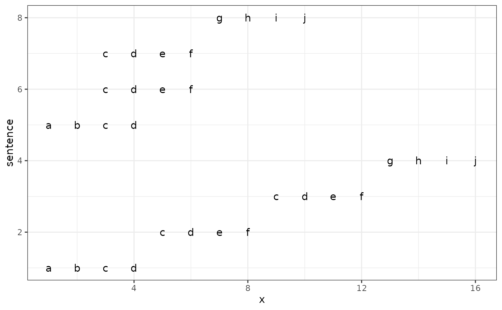

Align x_position of words according to common words between two sentences
Source:R/structure.R
align_sentence.RdAlign x_position of words according to common words between two sentences
Arguments
- df
A dataframe analysed by MeCab
- s_id
A String to specify sentence
- term, x_pos
A String to specify term and x_position
Examples
# \donttest{
library(magrittr)
library(dplyr)
#>
#> Attaching package: ‘dplyr’
#> The following objects are masked from ‘package:stats’:
#>
#> filter, lag
#> The following objects are masked from ‘package:base’:
#>
#> intersect, setdiff, setequal, union
library(purrr)
#>
#> Attaching package: ‘purrr’
#> The following object is masked from ‘package:magrittr’:
#>
#> set_names
library(ggplot2)
# settings
s1 <- 1:4
s2 <- 3:6
s3 <- 3:6
s4 <- 7:10
s_order <- list(s1, s2, s3, s4)
s_id <- "sentence"
term <- map2(list(letters), s_order, `[`)
df <- tibble::tibble(
{{s_id}} := rep(seq_along(term),
purrr::map_int(term, length)),
term = unlist(term),
x = seq_along(term))
# show dataframe
df
#> # A tibble: 16 × 3
#> sentence term x
#> <int> <chr> <int>
#> 1 1 a 1
#> 2 1 b 2
#> 3 1 c 3
#> 4 1 d 4
#> 5 2 c 5
#> 6 2 d 6
#> 7 2 e 7
#> 8 2 f 8
#> 9 3 c 9
#> 10 3 d 10
#> 11 3 e 11
#> 12 3 f 12
#> 13 4 g 13
#> 14 4 h 14
#> 15 4 i 15
#> 16 4 j 16
align_sentence(df)
#> [1] "2-1: c-2"
#> [1] "3-2: c-6"
#> # A tibble: 16 × 3
#> sentence term x
#> <int> <chr> <int>
#> 1 1 a 1
#> 2 1 b 2
#> 3 1 c 3
#> 4 1 d 4
#> 5 2 c 3
#> 6 2 d 4
#> 7 2 e 5
#> 8 2 f 6
#> 9 3 c 3
#> 10 3 d 4
#> 11 3 e 5
#> 12 3 f 6
#> 13 4 g 7
#> 14 4 h 8
#> 15 4 i 9
#> 16 4 j 10
# plot
df |>
align_sentence() |>
dplyr::mutate(`:=`({{s_id}}, .data[[s_id]] + max(.data[[s_id]]))) |>
dplyr::bind_rows(df) |>
ggplot2::ggplot(aes(x, .data[[s_id]], label = term)) +
ggplot2::geom_text() +
ggplot2::theme_bw()
#> [1] "2-1: c-2"
#> [1] "3-2: c-6"

# }